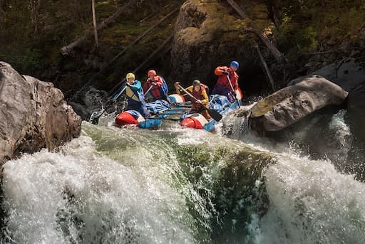
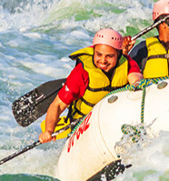

White Water Rafting
Our mission is simple: to provide exhilarating, world-class white water adventures that safely connect people with the unparalleled beauty and raw thrill of nature's powerful rivers. We believe that a perfect day is spent on the water, and we are dedicated to making that incredible experience accessible to everyone, from first-time rafters to seasoned thrill-seekers. Our commitment goes beyond the paddle; we employ only certified and highly experienced guides who are experts in river dynamics and emergency protocols, ensuring every run is conducted with the utmost safety and professionalism. Furthermore, we are passionate stewards of the river, committed to upholding the highest standards of environmental protection and conservation in our local ecosystems. Ultimately, we aim for every client to leave not just with a sense of accomplishment, but with unforgettable memories that last long after the paddle is dry.
History
Founded in 1985 by a group of passionate river guides, our company has grown from a single raft operation into the region's most trusted outfitter. We've weathered floods, celebrated countless successful runs, and always remained dedicated to the original spirit of adventure.
Our purpose is to connect people with the unparalleled beauty and thrill of nature's rivers. We believe in stewardship, safety, and creating unforgettable memories.
Adventure Awaits You!